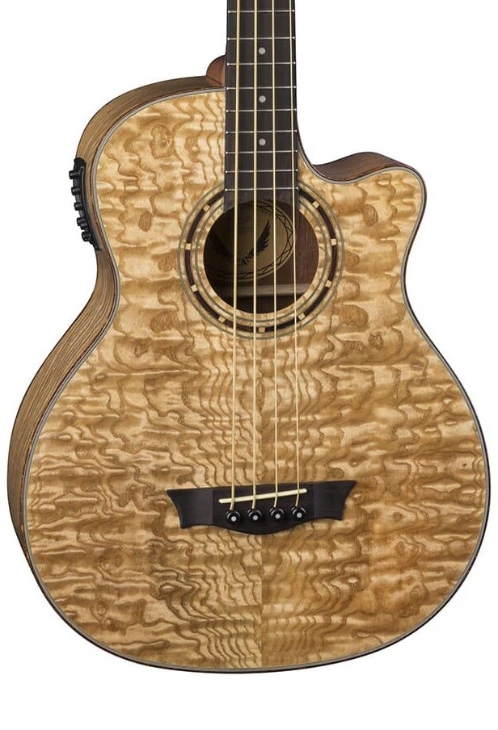
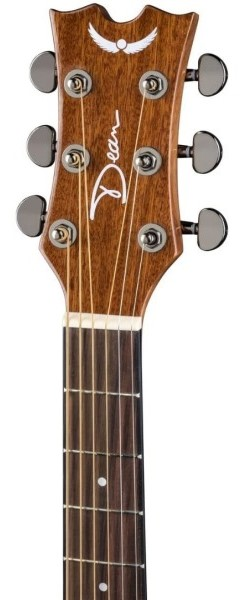
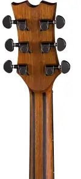
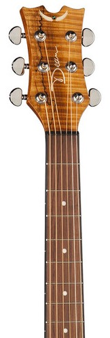
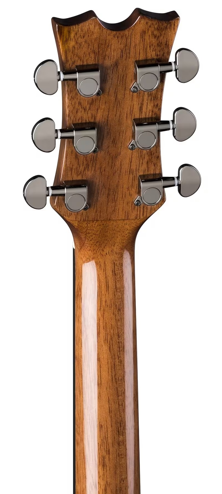

Акустичні гітари Dean не так широко відомі, хоча за якістю не поступаються електрогітарам: вони виготовляються з правильно підібраних порід дерева, ретельно зроблені і дуже красиві. Модельний ряд теж досить різноманітний: класика, акустичні гітари, акустичні баси. Майже всі інструменти мають вбудовану електроніку та тюнери.
Серії акустичних гітар Dean:
Exotica
Performer
Tradition
Jumbo
Класична серія Espana




